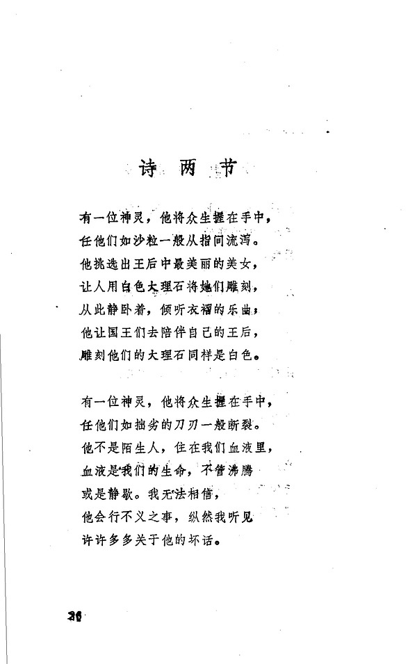

“二”从何来——略论意译
傻以为，所谓“意译”，就是译者臆想原文所表达的意思应该如此，然后欣喜地展示了自己的文笔。日前，行动中正巧碰上一个很有代表性的例子，今日得闲，聊加继续表述（前次的意见参见：唉，意译）。
此图片，出自http://book.douban.com/subject/3333604/的26页。问题在标题上，“诗两节”，这个“两”或者说“二”，是从何而来的呢？德语原文Strophen是Strophe（诗节）的复数，但并未给出具体的“二”（zwei）。按照该译者在版权页申明的，是：
据Insel Taschenbuch 1974年版译出
【傻按：Insel Taschenbuch，汉语意为“岛屿口袋书”或“岛屿袖珍本”
可以理解为，译者所据的就是此诗目前的通行底本，今附当今德国研究者广泛采用的《图画之书》（Das Buch der Bilder，大陆通称“图像集”，李魁贤挪移日译本汉字名之为“形象诗集”）：
原来如此，因为里尔克此诗的诗节共“二/两”节，所以，译者觉得有必要强调这个复数，根据实际节数，高高兴兴地加上了“两/二”：看呐，要注意单复数。
可是，因此，问题来了，里尔克此诗最初以“Strophen”为题目写作成了三节，见图：
图片扫描自http://book.douban.com/subject/2285254/第三卷，为避免PS的嫌疑，Dasha仅裁去了“黑边”。
那么，这首有三个诗节的诗也能称为“诗两节”吗？里尔克以及其他广大的德语诗歌作者在这同一个标题下写作的四、五、六……乃至N节诗，也能称为“诗两节”吗？
Dasha一直跟一些豆友解释Dasha直译的主张，“不增己见不减原文”（马士章，《归真要道•马叙》）就是最基本的要求。因为，“增己见”的结果就是这个“两/二”的惨剧，“减原文”就是唉，意译的悲剧。
也许，有人会问，那么Dasha追求直译，是不是要将这个复数的“诗节”直译成“诗节们”。Dasha答曰，不会。因为我们的汉语通常并不强调单复数，所以，Dasha更愿意译成“诗节”。或问，此举岂非“减原文”也於。傻复曰，汉语通常并不强调单复数，相信读者都会明白。【傻按：说“相信读者”时，这个“读者”也应该不会被说汉语的人理解为单数。
事情讲完了。
|  |
http://book.douban.com/subject/3333604/ |
此图片，出自http://book.douban.com/subject/3333604/的26页。问题在标题上，“诗两节”，这个“两”或者说“二”，是从何而来的呢？德语原文Strophen是Strophe（诗节）的复数，但并未给出具体的“二”（zwei）。按照该译者在版权页申明的，是：
据Insel Taschenbuch 1974年版译出
【傻按：Insel Taschenbuch，汉语意为“岛屿口袋书”或“岛屿袖珍本”
可以理解为，译者所据的就是此诗目前的通行底本，今附当今德国研究者广泛采用的《图画之书》（Das Buch der Bilder，大陆通称“图像集”，李魁贤挪移日译本汉字名之为“形象诗集”）：
http://www.douban.com/photos/photo/599562429/ |
原来如此，因为里尔克此诗的诗节共“二/两”节，所以，译者觉得有必要强调这个复数，根据实际节数，高高兴兴地加上了“两/二”：看呐，要注意单复数。
可是，因此，问题来了，里尔克此诗最初以“Strophen”为题目写作成了三节，见图：
http://book.douban.com/subject/2285254/ |
http://book.douban.com/subject/2285254/ |
图片扫描自http://book.douban.com/subject/2285254/第三卷，为避免PS的嫌疑，Dasha仅裁去了“黑边”。
那么，这首有三个诗节的诗也能称为“诗两节”吗？里尔克以及其他广大的德语诗歌作者在这同一个标题下写作的四、五、六……乃至N节诗，也能称为“诗两节”吗？
Dasha一直跟一些豆友解释Dasha直译的主张，“不增己见不减原文”（马士章，《归真要道•马叙》）就是最基本的要求。因为，“增己见”的结果就是这个“两/二”的惨剧，“减原文”就是唉，意译的悲剧。
也许，有人会问，那么Dasha追求直译，是不是要将这个复数的“诗节”直译成“诗节们”。Dasha答曰，不会。因为我们的汉语通常并不强调单复数，所以，Dasha更愿意译成“诗节”。或问，此举岂非“减原文”也於。傻复曰，汉语通常并不强调单复数，相信读者都会明白。【傻按：说“相信读者”时，这个“读者”也应该不会被说汉语的人理解为单数。
事情讲完了。
![转发 23](https://www.douban.com/share/recommend?sanity_key=_be639&apikey=&object_kind=1015&name=%E2%80%9C%E4%BA%8C%E2%80%9D%E4%BB%8E%E4%BD%95%E6%9D%A5%E2%80%94%E2%80%94%E7%95%A5%E8%AE%BA%E6%84%8F%E8%AF%91&image=https%3A%2F%2Fimg9.doubanio.com%2Fview%2Fnote%2Fsmall%2Fpublic%2Fp226810867-1.jpg&target_action=0&redir=https%3A%2F%2Fwww.douban.com%2Fnote%2F226810867%2F&object_id=226810867&heading=%E8%BD%AC%E5%8F%91%E5%88%B0%E8%B1%86%E7%93%A3&target_type=rec&btn_text=%E8%BD%AC%E5%8F%91&href=https%3A%2F%2Fwww.douban.com%2Fnote%2F226810867%2F&action_props=%7B%22note_url%22%3A%22https%3A%5C%2F%5C%2Fwww.douban.com%5C%2Fnote%5C%2F226810867%5C%2F%22%2C%22note_title%22%3A%22%E2%80%9C%E4%BA%8C%E2%80%9D%E4%BB%8E%E4%BD%95%E6%9D%A5%E2%80%94%E2%80%94%E7%95%A5%E8%AE%BA%E6%84%8F%E8%AF%91%22%2C%22author_name%22%3A%22Dasha%22%7D&curl=&type=com.douban.people&properties=%7B%22href%22%3A%22https%3A%5C%2F%5C%2Fwww.douban.com%5C%2Fpeople%5C%2FDasha%5C%2F%22%2C%22name%22%3A%22Dasha%22%2C%22uid%22%3A%221666065%22%7D&desc=%E5%82%BB%E4%BB%A5%E4%B8%BA%EF%BC%8C%E6%89%80%E8%B0%93%E2%80%9C%E6%84%8F%E8%AF%91%E2%80%9D%EF%BC%8C%E5%B0%B1%E6%98%AF%E8%AF%91%E8%80%85%E8%87%86%E6%83%B3%E5%8E%9F%E6%96%87%E6%89%80%E8%A1%A8%E8%BE%BE%E7%9A%84%E6%84%8F%E6%80%9D%E5%BA%94%E8%AF%A5%E5%A6%82%E6%AD%A4%EF%BC%8C%E7%84%B6%E5%90%8E%E6%AC%A3%E5%96%9C%E5%9C%B0%E5%B1%95%E7%A4%BA%E4%BA%86%E8%87%AA%E5%B7%B1%E7%9A%84%E6%96%87%E7%AC%94%E3%80%82%E6%97%A5%E5%89%8D%EF%BC%8C%E8%A1%8C%E5%8A%A8%E4%B8%AD%E6%AD%A3%E5%B7%A7%E7%A2%B0%E4%B8%8A%E4%B8%80%E4%B8%AA%E5%BE%88%E6%9C%89%E4%BB%A3%E8%A1%A8%E6%80%A7%E7%9A%84%E4%BE%8B%E5%AD%90%EF%BC%8C%E4%BB%8A%E6%97%A5%E5%BE%97%E9%97%B2%EF%BC%8C%E8%81%8A%E5%8A%A0%E7%BB%A7%E7%BB%AD%E8%A1%A8%E8%BF%B0%EF%BC%88%E5%89%8D%E6%AC%A1%E7%9A%84%E6%84%8F%E8%A7%81%E5%8F%82%E8%A7%81%EF%BC%9A%E5%94%89%EF%BC%8C%E6%84%8F...){kind=link}

羊悟能躺著中槍
我经常把复数译成“诗节们”，或者“诸诗节”、“那些诗节”，以示与单数区分。
经常连冠词也不敢放过。经常犯愁“of”“de”“l'”怎么处理。当然，也经常不管它了，管不了那么多了。
其实蛮纠结的。
什么地方该直译，什么地方该意译。唉。
既然Dasha兄不厌其烦，我也就奉陪再唠叨几句。
1，Dasha兄每次举例子说明什么是意译，都会举些极端的例子，拿错译来说意译，我觉得这是在刻意把“意译”的概念划到“错译”的范畴，意译与直译是两种方法，并不存在对与错，这是其一。
2，前些日聊到里尔克那首法文诗，我与Dasha兄指出何家炜的几处“非直译”的地方，Dasha兄说，“直译”只是兄的个人主张，而何家炜的译法兄也是喜欢的，当时想即刻回应，但觉得太露锋芒，Dasha兄反复说的两句“译者何德何能”如果用在此处，那么何家炜的“非直译”又何德何能博得Dasha兄的喜爱。
3，关于“译者何德何能”二句，我认为这也是译者的一种无端假设，既为作者假设，假设了作者的原意，如果牵扯到作者的翻译观，作者可能并不想看到自己的作品被直译并认为这种翻译是损失了东西的；又为读者假设，假设了读者的智力，而这些读者很可能的是读不懂译文却轻松读懂原文。
4，相对于Dasha兄对意译的刻板印象，我对直译也有一些片面看法，即认为直译类似于机器翻译，而且直译还在追求一种等效的幻象，等效问题我在之前的那篇拙文里已谈过，此处不再赘述。但我不想Dasha兄与我都因为结果的拙劣而否定一种方法，意不是“臆”，直也不是“拙”，如果举极端的例子，我可以把直译贬得一文不值，也可以让我自己放弃所谓的“意译”。
其余的想法想到再随时补充。另外，我喜欢Dasha的翻译，一来是因为众多非直译的译者并没有把翻译做好，比如程抱一的翻译，而Dasha的直译则为不懂原文的读者提供一个相对可信的版本，这是Dasha兄的伟绩；二来是因为坚持直译这种方法的译者，只有Dasha兄在自己坚持的这条道路上做到最好，而且对自己的这种译法也十分明确，这一点无可挑剔。不管这次是不是谬赞，但也是真实看法吧。
顺便举个Dasha兄自己的非直译的例子。
https://www.douban.com/note/185285873/
accordez-moi la grâce de produire quelques beaux vers
恩赐我吧，令我创作出若干优美的诗句
哈，说太多了，就是综合症。
不管综合症不综合症，想说就说吧还是。。
不论是藻饰还是错误，反正所谓意译就是把原文给改了，我举何家炜那个例子，不只这一处，比如à l'extrême bouche和innombrables，Dasha兄译的那首波德莱尔也有一个m'enorgueillir，我举这些不是在挑错，我认同这样的翻译，只是与其自身的理念不符的地方，我要指出。另外Dasha兄的“不增己见不减原文”我已领会，所以才会生此疑问。至于“accordez-moi la grâce”的翻译，我明白Dasha兄很注重翻译传统，倘若没有这种”固定“了的译法，Dasha兄大概不会这么译。我当初关心的也正是这一点，翻译的传统，以及词典和语法书的编写，都是早期形成的传统印象。我前面说直译类似机器翻译，我说这是我的片面看法，目的是想说明Dasha对意译也有一种刻板印象，既然我说自己片面，自然也是承认这中看法是不对的。鲁迅的“硬译”观点和本雅明的观点也许有一天我会领会地更深一些，现在只是说一说目光所及的观点......
很多行当都一样：说大话发感慨高屋建瓴地，容易，人人都爱，具体到日常琐碎就难了。比如说我说人要爱干净，不干净是不对的。但是话刚说完，我又想上厕所了。很矛盾啊。
翻译就是个活计，虽然都想尽量做好，但不管怎样它毕竟总是个客观摆在那里总是提示你做得不够好的活计。所以，这事不能说太细哈。
说得太多，耽误了交稿时间，被编辑猛打电话不敢接，被退合同，被别家抢了头啖汤，那就不美了。
我承认，我现在是来和稀泥的。

复数这个问题，我觉得还是要根据具体情况对待，可以不在汉语里强调复数的，就不用。但很多情况下，诗人用复数而不用单数，是有意味的，这时候，就是中文觉得别扭啰嗦，我也会坚持译成复数。
威尔伯谈直译谈得好，就是两点，对原作者每一个意思的忠诚，不增不减不修饰不消减；第二，译者要隐身。
对了，各位仁兄，我常常想，我们或许可以把翻译中常常碰到的最让我们头大的问题列出来，大家可以看看。有时候自己会想这些问题是不是太基本了，说出来给人听可笑吧。
——也许，有人会问，那么Dasha追求直译，是不是要将这个复数的“诗节”直译成“诗节们”。Dasha答曰，不会。因为我们的汉语通常并不强调单复数，所以，Dasha更愿意译成“诗节”。——
这个道理，不少翻译的人不太清楚，他们的译文外文腔浓得很，但他们美其名日：那是外文的风格或文体。“我们的汉语”，他们大概是忘记了，或者他们纯粹是想增加中文的式样。
Dasha所倡导的直译理念以及注译结合的方法，很好！
苦啊，我经常要直译硬译。比如“it is the age of empires”，要保持词序，因为我觉得此处因为所以需要有这个词序，移动了就不好了。
我要译成什么呢？可能是“这个时代是属于诸帝国的”。但这似乎是意译了。
“这个时代是属于诸帝国的” vs “这是诸帝国的时代”，哪个是意，哪个是直呢？
无靶子扫射啊！其实意译做得好的也了得，Robert Lowell, James Merrill, Paul Celan，你得够那水平啊，吃得透，自己玩，玩得高超也行。
其实这一阵胡乱纠缠的是概念偷换。不知道Dasha兄怎么想，我不赞成的是根本没理解就去意译了，就去意淫了，就去自我沉浸，自我表现审美感的那种意译；而这种情况雪上加霜的是坏的语言习惯，不知其意而自我感觉美啊雅啊的词乱用。涂脂抹粉的中文，把“雅”都变得恶俗让人厌恶了。
请问您，《葡萄牙人信札》（1669） [法国] 加布里埃尔·约·德·基勒拉格，这本书有翻译成中文的没？叫什么名字？我想找到阅读。
最近在看林克翻译的《穆佐书简》，还是觉得翻译读着有点点应该再接近一点里尔克。
因为在里尔克《马尔特手记》和这本书中，都读到贝雅修女的事，可见她对里尔克影响很大。就很想找到她的故事阅读。那个修女叫玛丽亚娜·阿尔科弗拉多，请问，您知道怎么可以找到这本书？
感谢，节日快乐！
你直接可以读到原版真好。
我读林克等翻译的《穆佐书简》，很急。有些部分觉得翻译的不透，感觉那最好的部分能转译过来，但因为笔力的缘故，或者理解力的缘故，就是给跑了。使读者接不住。里尔克应该很委婉细腻深入深刻，但是林克的翻译一看就太男性化，比较生硬。读着，还是不好。我最近读程抱一那本《与友人谈里尔克》，就觉得不错。程抱一把里尔克理解的挺透。
谢谢，我明天去图书馆找那本《葡萄牙人信札》。
林克在前言中说“译者好比侦探解谜”来对待“背景和前因”，而不是翻查资料爬梳钩沉，林克自比福尔摩斯，所以译文也充满了悬疑。
呵呵，你说得好！
我想对你说，亲爱的：里尔克与莎乐美书信选 / (德) 里尔克, 莎乐美著;
这本书，我期盼了很久，拿到后感觉很失望，没读完就给图书馆还了。但愿，您翻一遍这本！
里尔克与罗丹 / 刘志侠著. ，这本，我还挺满意的。
马尔特手记 / 〔奥地利〕里尔克著；曹元勇译，曹的翻译让我挺失望。我只好对朋友说，算了，别买了，等好翻译吧。
抒情诗的呼吸——一九二六年书信 / 〔俄〕帕斯捷尔纳克，〔俄〕茨维塔耶娃，〔奥〕里尔克著；刘文飞译. 刘文飞的翻译，还说得过去。那本《文明的孩子》，我就挺喜欢。
给青年诗人的信 / （奥）里尔克著; 冯至译. 还是冯先生的翻译好啊。但是我觉得程抱一对里尔克的翻译指出，应该清晰这一点，值得注意。我读程抱一就发现他翻译的很清晰。很多诗句里的好，我都是在程那不多的翻译中感觉到的。有些人翻译的，太绕了。
里尔克法文诗 / 何家炜译.这个， 我很喜欢。
杜伊诺哀歌 / （奥）里尔克著; 林克译.这个我如果看到了，会买。
马尔泰手记 / 方瑜译.方瑜翻译的马尔特书记是不是好？
里尔克诗及书简 / 李魁贤译. 台北: 商务印书馆, 1967年2月初版
在台湾当属李魁贤最为着力。 不知道还能不能找见这个书。
你贡献的这些内容太好了。非常感激！
我会让我的朋友们也来阅读的。
http://www.rilke.cn/text.asp?ID=1385
呵呵，原来早有人骂绿原了。
20世纪桂冠诗丛
里尔克诗选
臧棣翻译过一整本里尔克？
我得去找这个。
先生您好！
请问一下，里尔克在《马尔特手记》里提到葡萄牙修女时，还提到意大利女诗人卡斯帕拉.斯坦帕，说她给一个伯爵写过两百首十四行诗。她的名字为什么我在网络上找不到？那些诗歌可以找到吗？除了您，我都不知道去问谁了。
哦，遗憾。
也谢谢您。
还会跟您请教的：）

一路走好。。。。。。
你好，哥们，惋惜。
驻足，悼念！

大家知道他的译本什么时候出吗？
才知道你，但是你已经去世快十年了，遗憾。
悼念。
Dasha的最新日记 · · · · · · ( 全部 )
- 里尔克2首意大利语诗草【求板砖】 (23人喜欢)
- 里尔克6首俄语诗（稿本A）+草稿2篇 (44人喜欢)
- 里尔克1901年1月24日夜写给褒拉的信 (24人喜欢)
- 唉，意译 (12人喜欢)
- 绘画之于诗人里尔克 (144人喜欢)
热门话题 · · · · · · ( 去话题广场 )
- 我家自有清凉法 331.1万次浏览
- 回想高考后的漫漫长假 236.9万次浏览
- 我家的床头柜替代方案 96.8万次浏览
- 看展记 9941.4万次浏览
- 豆瓣野生艺术摄影大赛 2052.2万次浏览
- 录取通知书盲盒大赏 新话题
- 我的冰箱里整整齐齐 29.6万次浏览
- 30天码字「不断更」计划 1554次浏览
- > 我被邀请参与的话题(0)
- + 发起新话题